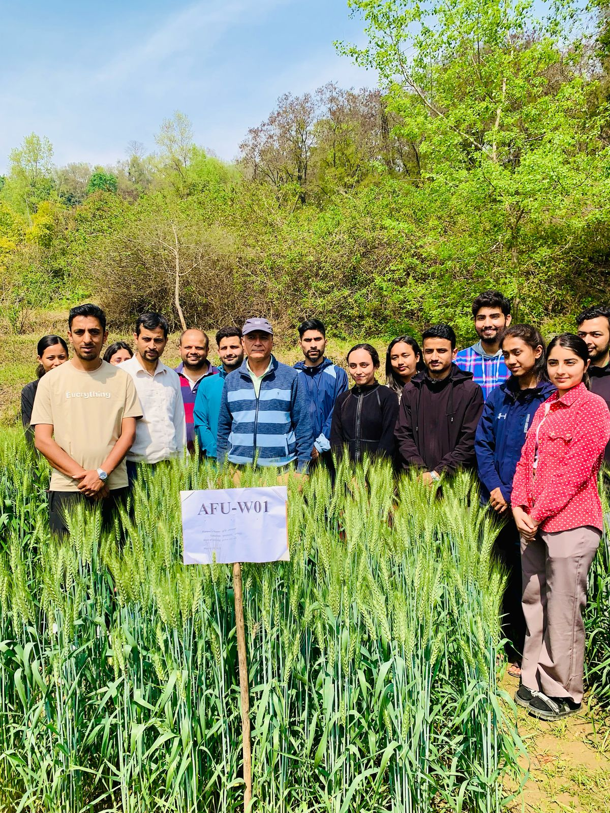
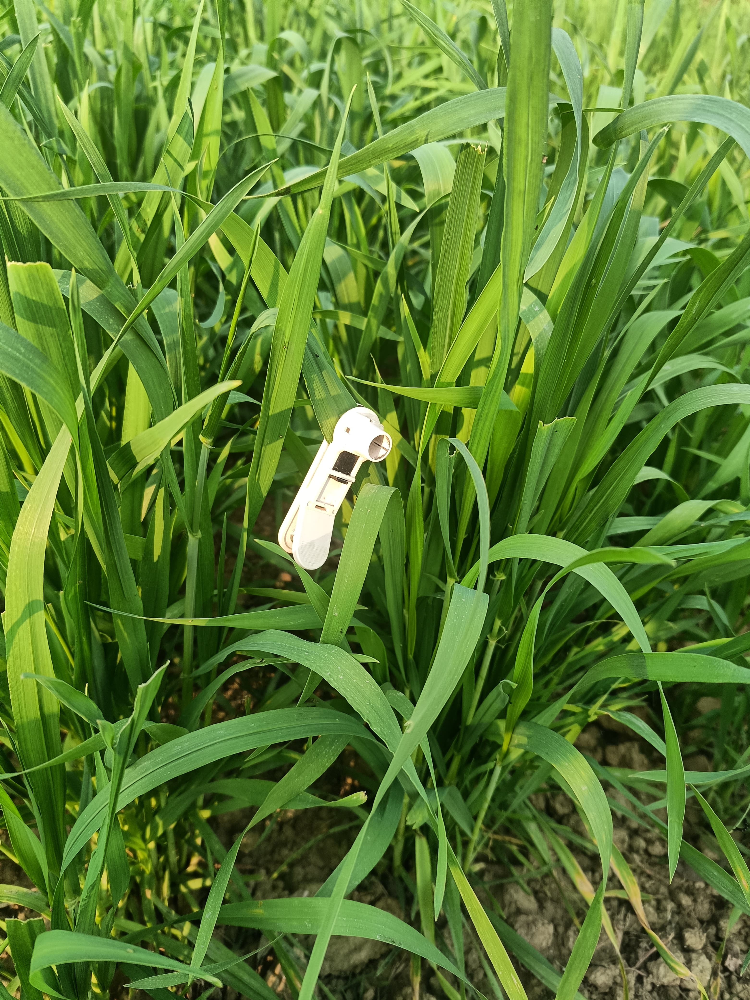

Project Details
- Funding Agency: Champadevi Rural Municipality, Okhaldhunga
- Principal Investigator: Sujan Chapagain
- Co-Principal Investigator: Sandesh Subedi
- Project Members: Samir Nepal, Sancheet Gautam, Prabesh Mandal, Sagar Kalwar
- Project Supervisors: Ankur Poudel, Bishnu Prasad Kandel, Mahesh Subedi
Description
Landraces, genotypes, and released varieties were studied under two contrasting environments. Moreover, two new genotypes AFU W01 and AFU W02 developed by Professor Madhav Ghimire were also used as genetic material in this study.
Read more Hide details
Background
Wheat (Triticum aestivum L.) is one of the most important staple cereal crops of Nepal, contributing significantly to national food security, dietary energy supply, and rural livelihoods. In Nepal, most wheat research and varietal development have been concentrated in the Terai domain, where irrigation facilities and relatively favorable growing conditions have enabled the release of several high-yielding varieties. However, the mid-hill region, which constitutes a large proportion of the country’s cultivated area, has received comparatively less attention.
The mid-hills present unique challenges and opportunities for wheat production. This region is predominantly rainfed, highly dependent on erratic and unevenly distributed rainfall, with limited access to irrigation infrastructure. As a result, wheat productivity here is constrained by frequent moisture stress and increasing vulnerability to climate variability. Only a few varieties have been specifically released and recommended for mid-hill conditions, leading to a lack of suitable options for farmers who depend on wheat as a winter crop.
Despite these constraints, the mid-hills hold great potential for expanding wheat cultivation and strengthening food system resilience. Developing and promoting wheat genotypes with high adaptability, yield stability, and drought tolerance is a key strategy to enhance sustainable agriculture in this region. Introducing resilient varieties can not only improve productivity and household food security but also support farmers in coping with climate-induced risks, thereby securing wheat’s role as a reliable crop in the mid-hills of Nepal.
Objectives
- Assess performance of local and improved wheat genotypes.
- Identify genotypes suitable for contrasting environments.
- Support wheat breeding programs and future variety release.
Methods
A field experiment was conducted using an Alpha Lattice Design under two environmental conditions: Irrigated and Drought-stressed, with two replications per environment.
Data Collection:
- Phenological Traits: Days to Booting, Days to Heading, Days to Anthesis, and Days to Maturity.
- Yield-related Traits: Spike Length, Number of Spikelets, Number of Grains per Spike, Harvest Index, Biological Yield, and Grain Yield.
Data Analysis: Analysis of Variance (ANOVA), Post Hoc Tests, Additive Main Effects and Multiplicative Interaction (AMMI), Genotype and Genotype × Environment (GGE) Biplot, Principal Component Analysis (PCA), and Cluster Analysis were conducted.
Funding & Timeline
Champadevi Rural Municipality, 1-year trial; conducted from March 2025 to February 2026.
Project Highlights




